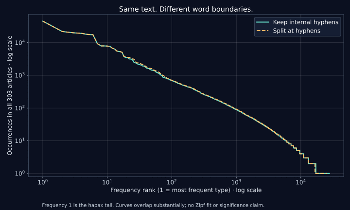

Week 05 · NLP I · Go Nuts
A small hyphen.
A different vocabulary.
How does keeping names like Spider-Man together change the rare-word counts in Marvel’s Wikipedia articles?
We read the same 303 articles twice. Only one boundary rule changes: keep internal hyphens, or split at them. The apparent rarity of the language changes without changing a single source sentence.
See the comparison ↓01 · The question
Is a rare word rare—or just joined together?
A token is an occurrence; a type is a distinct token form. A hapax type occurs exactly once in the combined corpus, not once per article. Names such as Spider-Man and X-Men make Marvel a useful place to test whether the boundary rule changes vocabulary statistics.
This investigation follows Week 5 exercise 5.9: ask one question, make one figure, and check the text behind the claim. We use a new controlled comparison, building on our tokenization and hapax exercises.
02 · Actual results
More pieces. Fewer distinct types.
| Measurement | Keep hyphens | Split hyphens |
|---|---|---|
| Token occurrences | 722,948 | 736,535 |
| Vocabulary types | 27,711 | 25,302 |
| Types occurring once | 10,621 | 8,741 |
| Hapax share of vocabulary | 38.33% | 34.55% |
Splitting adds 13,587 token occurrences, yet removes 2,409 vocabulary types (8.69%) and reduces the hapax count by 1,880 (17.70%). Hapax share means number of types with count 1 / all types, not the proportion of all token occurrences.
Keeping hyphens gives a hapax share of 38.33%; splitting gives 34.55%, a 3.78 percentage-point decrease. The same articles appear less lexically rare under the splitting rule. Neither number is a uniquely correct measure of meaningful concepts.

The curves look surprisingly similar at this scale, even though the once-only vocabulary changes markedly. A point at rank 100 means the hundredth-most frequent type under that rule—not necessarily the same word in both curves. The flat tail at frequency 1 contains the hapax types. A broadly declining log–log shape does not prove an exact Zipf law; we have not fitted an exponent or tested alternative distributions.
03 · Check the passages
The boundary changes the unit being counted.
These short excerpts were inspected in the frozen archive; current Wikipedia links provide attribution and may have changed since the snapshot. Character offsets and exact excerpts are saved in results.json. Cases are illustrative: two familiar names, then the alphabetically first hyphenated hapax shorter than 26 characters whose components all recur after splitting.
spider-man: 1,930 occurrences → separate pieces
Frozen article: Abomination (character).
…e more. The process drives Blonsky insane, and he battles heroes Spider-Man and the She-Hulk, managing to knock both unconscious. The Abomination is eventually…
Across the full corpus, spider-man goes from 1,930 to 0 as a type. Component counts (keep → split): spider: 228 → 3,374; man: 1,090 → 3,545.
x-men: 1,494 occurrences → separate pieces
Frozen article: Agent X (Marvel Comics).
…an X in the title to more closely identify it with their popular X-Men franchise. As part of the same effort, Cable was changed to Soldier X and X-Force to…
Across the full corpus, x-men goes from 1,494 to 0 as a type. Component counts (keep → split): x: 485 → 2,363; men: 107 → 1,630.
a-bomb: 1 occurrences → separate pieces
Frozen article: Hulk.
…eed to be depowered. He creates a cure and removes the powers of A-Bomb (Rick Jones), Skaar, and Red Hulk. Eventually, Doc Green's intellect fades and his n…
Across the full corpus, a-bomb goes from 1 to 0 as a type. Component counts (keep → split): a: 17,487 → 17,536; bomb: 70 → 75.
A-Bomb is the rare-type example: its single occurrence disappears as a distinct hyphenated type; a and bomb are already recurring pieces. By contrast, Spider-Man and X-Men are frequent types, so removing their joined forms does not itself remove a hapax. Their pieces also receive occurrences from other compounds: the increase in spider is not explained by Spider-Man alone.
The full accounting is not simply “all compounds disappear.” 1,952 once-only hyphenated types disappear, and 167 previously once-only unhyphenated types become repeated when compound pieces merge into them. Splitting also creates 239 new once-only pieces. Net change: −1,952 −167 +239 = −1,880. The complete compound audit lists all 2,805 hyphenated types and their component counts.
04 · Exact rules and data
Change one rule. Hold the rest fixed.
Source: marvel_pages.zip from the official course data page. Its README dates the snapshot to 26 August 2026. We load all 303 UTF-8 article files, excluding README; their decoded filename IDs match the Week 1 node list exactly. The source contains 4,447,666 characters. We analyse the supplied full text without additionally removing headings or boilerplate.
- Shared extraction: use Python’s Unicode regex word characters excluding decimal digits and underscore:
[^\W\d_]+. Single-letter pieces are retained. Digits, underscores, apostrophes, spaces and other punctuation delimit tokens. - Keep rule: allow one or more such runs joined by internal ASCII hyphens (U+002D):
[^\W\d_]+(?:-[^\W\d_]+)*. ThusSpider-Manis one token. - Split rule: use
[^\W\d_]+alone. ThusSpider-ManbecomesSpider,Man. Hyphens themselves are not tokens. Repeated hyphens and non-ASCII dashes are boundaries in both rules; no dash normalization is performed. - Shared processing: apply Python
lower()after extraction. No stopword removal, lemmatization, stemming, minimum-length filter, or minimum-frequency filter. Apostrophes split in both rules (so possessivesremains). - Pool counts across the identical article set. Compute vocabulary size, hapax count and hapax/vocabulary share; export per-document checks and the two full ranked frequency tables.
SHA-256 of the archive: 36023ca077053b3df5bd55630754cb514c3f9dbecbd70afcb2283e5bcc0017ee. The script refuses a different archive rather than silently comparing a new snapshot. Wikipedia article text is attributed to its contributors under its applicable licenses; the archive is downloaded, not republished in this repository.
05 · Interpretation and limits
Rarity belongs to a representation.
Keeping joined names preserves distinctions that splitting can erase: a character name can become ordinary words or letters. But this rule applies to every hyphenated expression, including descriptive compounds, not only character names. The experiment therefore measures the effect of an ASCII-hyphen rule—not a named-entity recognizer.
The conclusion is limited to these 303 English Wikipedia articles, this snapshot and these exact rules. Case distinctions, numbers and punctuation are lost in both treatments. Other tokenizers or Unicode-hyphen conventions can give different results. A hapax is not automatically a typo, a new concept or an important character; many counts reflect editorial choices and article length.
AI assisted code, analysis, source checks and writing. The measurements were computed from the archive. These checks do not imply student review or human annotation. See AI_METHODS.md. Sharing the link in Teams and providing peer feedback remain separate course activities.
python3 -m venv .venv-week5
source .venv-week5/bin/activate
pip install -r scripts/requirements-week5.txt
python scripts/analyse_week5.py
python -m http.server 8000Run from the repository root; open /weeks/week5/. Python 3.12.14 and matplotlib 3.10.8 produced the saved outputs. The script downloads the archive if missing. For an isolated rerun, add --output-dir /tmp/week5-check. Saved output tables and figures regenerate; if changing rules or data, also update the static article’s numbers.
Validation checks every document’s split sequence against the keep sequence with hyphens split, rebuilds the corpus counts independently from kept-type counts, and checks token-increase and hapax-change identities. An isolated rerun reproduces saved outputs.
Analysis codeDependenciesResults and passage auditPer-document counts
All weeks → Next: Week 6 →